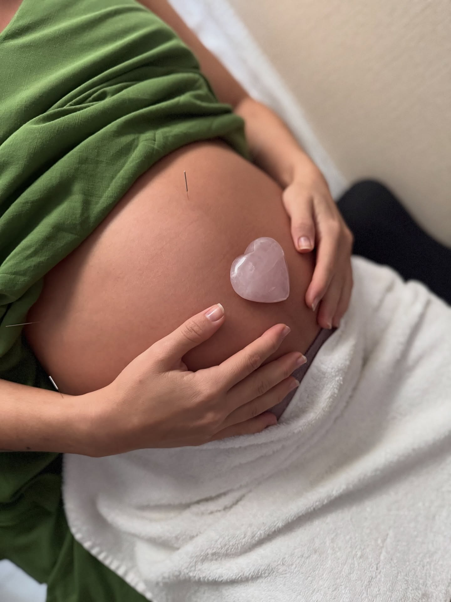
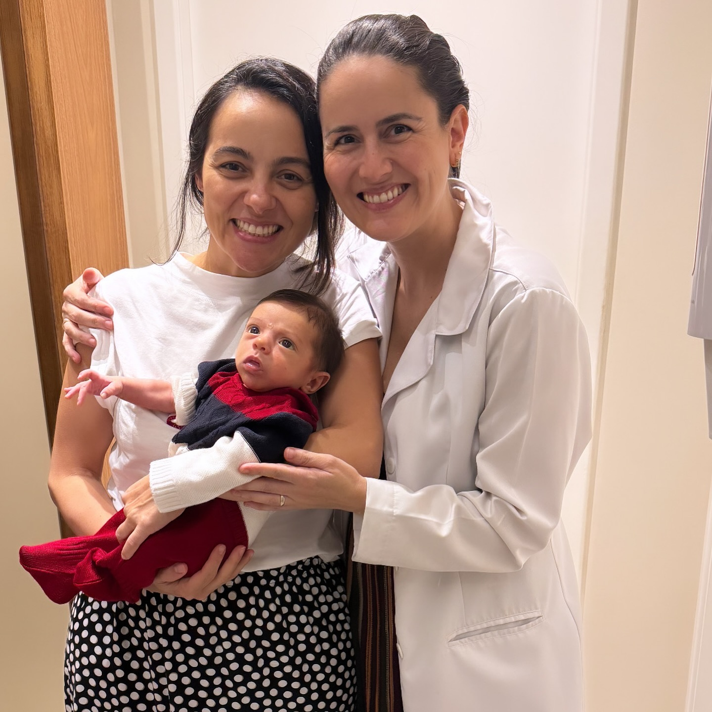
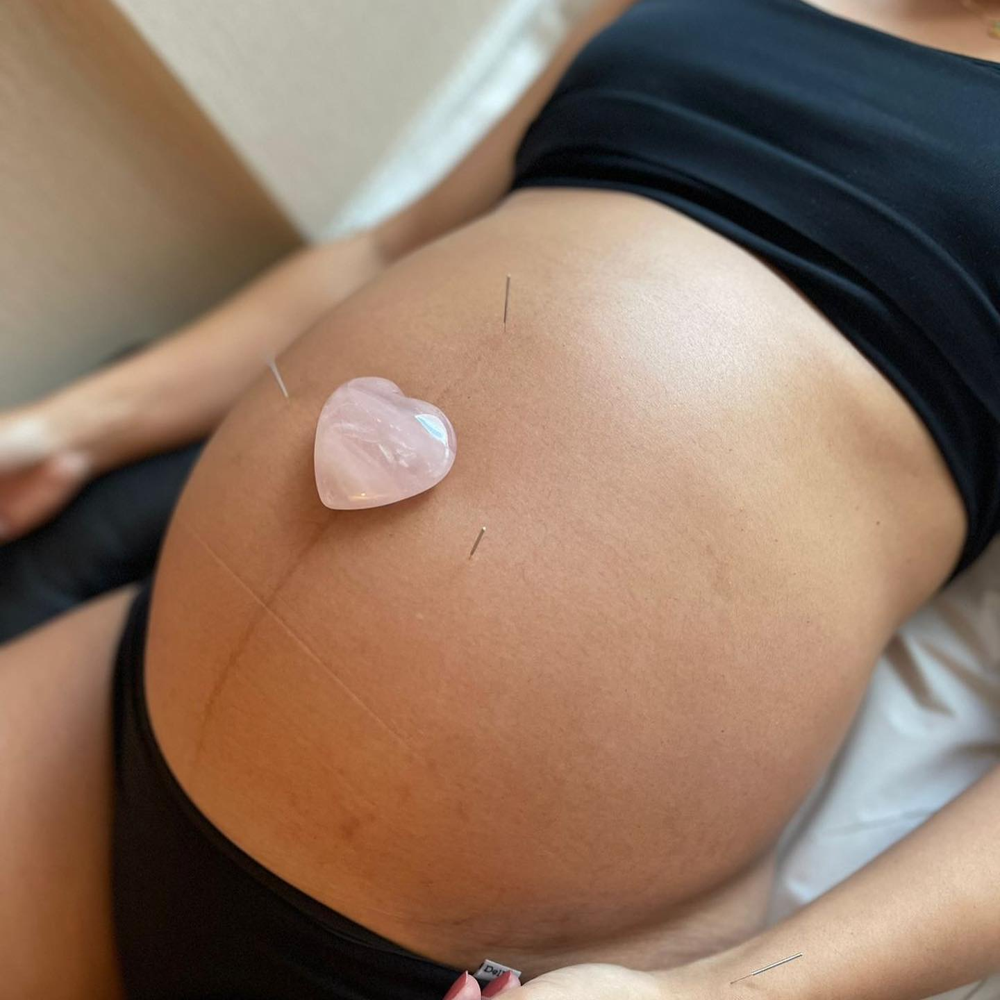
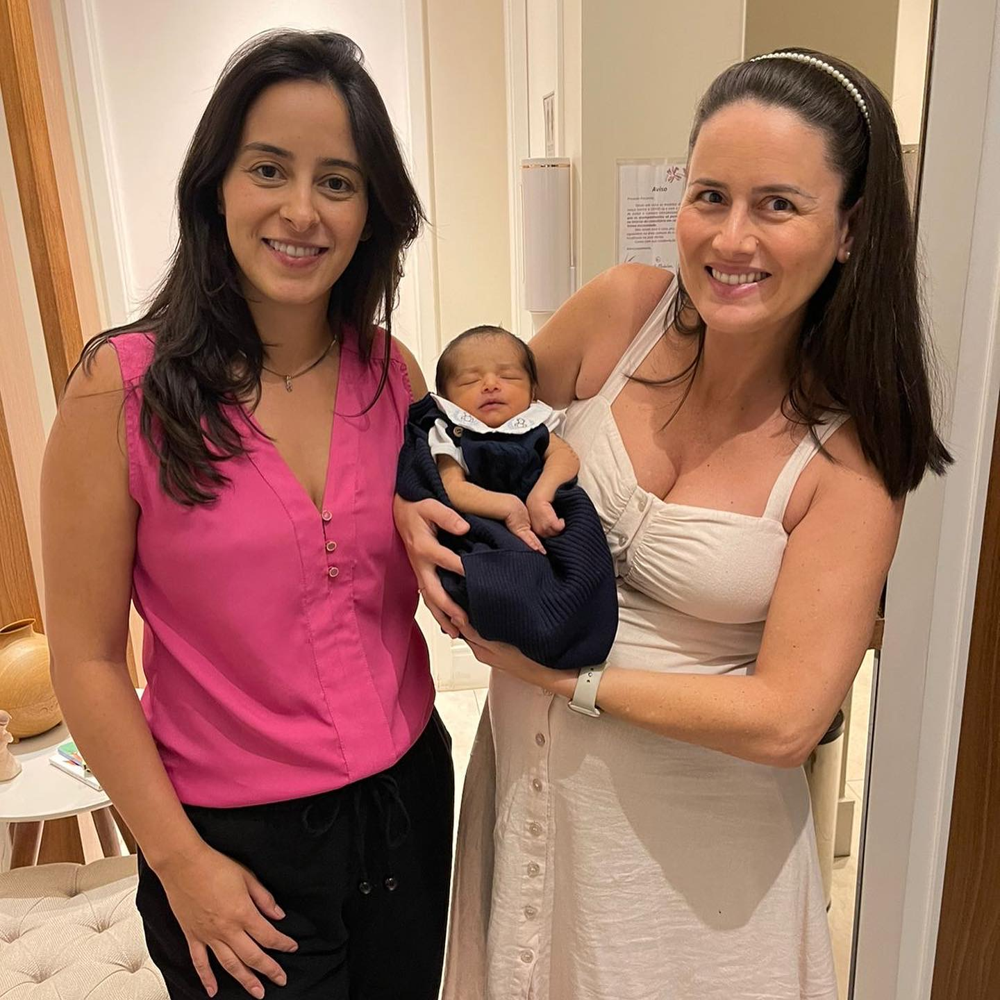

01
Jornada de
Fertilidade
Acompanhamento complementar para mulheres em jornada de fertilidade, com escuta, individualização e respeito aos tratamentos já em curso.
Acupunturista especialista Fertilidade, gestação e pediatria
Fisioterapeuta e Acupunturista, especialista em Medicina Chinesa, com especialização concluída na China pela WFAS. Priscila acompanha mulheres e famílias em fertilidade, gestação, ginecologia, obstetrícia e pediatria com 20 anos de experiência na saúde.
Formação internacional, prática clínica em Brasília e cuidado individualizado, sem promessas prontas e em diálogo com os acompanhamentos que já fazem parte da sua história.
Acupuntura especializada
Cada fase pede segurança, escuta e precisão. A Medicina Chinesa entra como recurso complementar, sempre a partir de avaliação individual e integração responsável com outros cuidados.
Jornada de
Acompanhamento complementar para mulheres em jornada de fertilidade, com escuta, individualização e respeito aos tratamentos já em curso.
Cuidados na
Cuidado com técnica e delicadeza para uma fase de grandes transformações, sempre atento à segurança da gestante e ao diálogo multidisciplinar.
Cuidado em
Atendimento acolhedor para crianças e famílias, com avaliação cuidadosa, comunicação clara e respeito aos limites de cada idade.
A acupuntura é definida após avaliação individual e não substitui o seguimento médico, pediátrico ou de outros profissionais de saúde.
Gestação na prática
Na gestação, técnica e delicadeza precisam caminhar juntas. A acupuntura pode integrar um plano de cuidado responsável, sempre após avaliação individual e em diálogo com os profissionais que já acompanham a gestante.




A abordagem
Mais do que aplicar uma técnica, cuidar é compreender contexto, reconhecer limites e construir um caminho possível para cada mulher, criança e família.
Conheça minha trajetóriaO primeiro encontro é dedicado a compreender histórico, rotina, fase de vida e sinais que ajudam a orientar o cuidado.
A conduta é pensada com clareza, respeitando prioridades, limites, tratamentos em andamento e objetivos possíveis.
A evolução é acompanhada com reavaliações, comunicação cuidadosa e integração com outros profissionais quando necessário.
Experiência clínica & cuidado humano
Conhecimento técnico só faz sentido quando encontra uma escuta verdadeira.
Sobre Priscila
Priscila Medeiros é Fisioterapeuta e Acupunturista, especialista em Medicina Chinesa, com especialização concluída na China pela WFAS (World Federation of Acupuncture-Moxibustion Societies).
Sua atuação reúne 20 anos de experiência na área da saúde com foco em saúde da mulher, fertilidade, ginecologia, obstetrícia, gestação e pediatria.
Cada atendimento considera contexto, rotina, outros tratamentos e os objetivos possíveis para aquele momento. Técnica, escuta e responsabilidade caminham juntas.
Palestras & eventos
Formação internacional na China e experiência clínica transformadas em conversas relevantes sobre acupuntura, saúde da mulher, fertilidade, gestação, pediatria e atuação multidisciplinar.
Conteúdo para cuidar com informação
Informação responsável ajuda a tomar decisões com mais segurança. Explore temas da acupuntura e da Medicina Chinesa com clareza, limites e linguagem acessível.
Dúvidas frequentes
Algumas respostas para ajudar você a entender melhor como funciona o cuidado.
O primeiro encontro é um momento de escuta e compreensão do seu histórico, da sua rotina, dos acompanhamentos já realizados e dos objetivos possíveis para o cuidado.
Não. O cuidado integrativo é complementar e deve dialogar com o acompanhamento médico e com os demais profissionais envolvidos em cada caso.
Essa integração pode ser considerada após avaliação individual, com atenção aos objetivos, aos limites e às orientações dos profissionais que já acompanham você.
Sim, a pediatria faz parte do escopo de atendimento informado. Cada caso precisa de avaliação individual e, quando necessário, diálogo com o pediatra ou outros profissionais que acompanham a criança.
O atendimento acontece no Centro Médico Lúcio Costa, na Asa Sul, em Brasília. As informações completas são enviadas no momento do agendamento.
Entre em contato com o tema, o perfil do público, a data prevista e o formato do evento. A partir desse briefing, a disponibilidade e a proposta são preparadas.
Vamos conversar
Conte se você procura atendimento em fertilidade, gestação, pediatria ou outro cuidado relacionado à saúde da mulher. Assim, o primeiro contato fica mais claro.